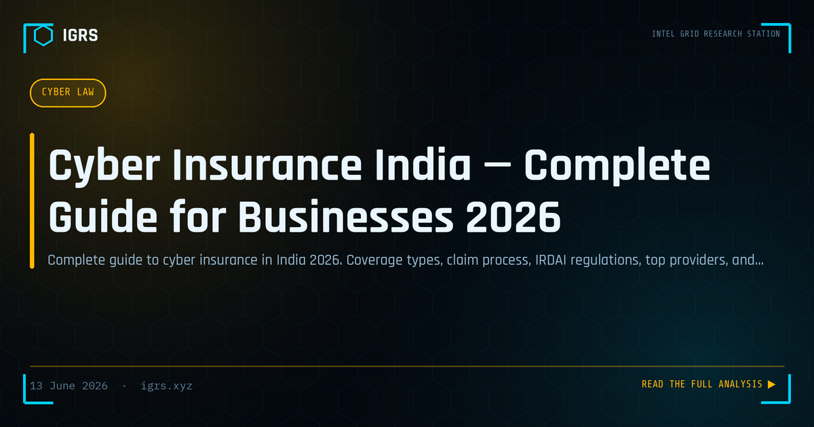

Cyber Insurance India — Complete Guide for Businesses 2026
Cyber Insurance: Essential Protection for Indian Businesses
As cyberattacks against Indian organisations escalate in frequency and cost, cyber insurance has shifted from a nice-to-have to a business necessity. With data breaches costing crores and ransomware capable of halting operations, cyber insurance provides crucial financial protection and incident response support. This guide explains cyber insurance in India — what it covers, what it does not, and how to choose a policy.
What Cyber Insurance Covers
| Coverage Area | What It Includes |
|---|---|
| Data breach response | Forensics, notification, credit monitoring |
| Business interruption | Revenue loss during downtime |
| Cyber extortion | Ransomware response (and sometimes payment) |
| Third-party liability | Customer claims from data breaches |
| Regulatory costs | DPDP Act penalties and defence (limited) |
| Social engineering fraud | BEC and CEO fraud losses |
Key Providers in India
The Indian cyber insurance market includes major domestic insurers — ICICI Lombard, Bajaj Allianz, HDFC ERGO, Tata AIG, and New India Assurance — alongside international players like AXA XL and Zurich. Premiums and coverage vary significantly based on the organisation's industry, revenue, data sensitivity, and security posture.
What Cyber Insurance Does NOT Cover
Understanding exclusions is as important as understanding coverage:
- War and state-sponsored attacks — an expanding exclusion
- Prior known vulnerabilities not patched before the policy
- Intentional acts by the insured
- Bodily injury from cyber events
- Infrastructure failure — power, internet outages
The war exclusion has become particularly significant, as insurers increasingly attribute major attacks to state actors to deny claims.
IRDAI Regulation
The Insurance Regulatory and Development Authority of India (IRDAI) regulates cyber insurance products. IRDAI has moved toward standardised policy wordings for key coverage elements to reduce disputes and improve clarity for policyholders. Organisations should verify that any policy complies with current IRDAI guidelines and understand the standardised terms.
The Security Posture Assessment
Insurers now require detailed security questionnaires before issuing cyber policies, assessing the organisation's risk. Common requirements include MFA deployment, patch management practices, backup procedures, endpoint security, employee training, and incident response readiness. A weak security posture results in higher premiums, coverage limitations, or outright denial. Strong security not only reduces risk but lowers insurance costs.
How Much Does Cyber Insurance Cost?
| Organisation Size | Approximate Premium Range |
|---|---|
| Small business (SMB) | From around ₹50,000/year |
| Mid-size enterprise | Several lakhs/year |
| Large enterprise | Crores/year |
Healthcare and financial services typically pay the highest premiums due to data sensitivity and regulatory exposure. Premiums depend heavily on the security posture assessment.
Cyber Insurance and DPDP Compliance
The DPDP Act 2026, with penalties up to ₹250 crore, has made cyber insurance increasingly relevant. While insurance cannot cover regulatory penalties in full, it can fund breach response, legal defence, and notification costs — significant expenses under the DPDP breach notification regime. Organisations should understand exactly how their policy interacts with DPDP obligations.
The Claims Process
When an incident occurs, the claims process typically involves immediate notification to the insurer, engagement of the insurer's approved incident response panel (forensics, legal, PR), documentation of the incident and losses, and assessment against policy terms. Many policies require using the insurer's panel providers, so understanding this in advance is important. Prompt notification and thorough documentation are essential to a successful claim.
Choosing the Right Policy
Selecting cyber insurance requires careful evaluation: assess your actual risk exposure and required coverage, scrutinise exclusions especially the war and prior-knowledge clauses, verify IRDAI compliance, understand the claims process and panel requirements, and ensure coverage limits match potential losses. The cheapest policy with broad exclusions may provide little real protection.
Is Cyber Insurance Mandatory in India?
Cyber insurance is not currently mandatory in India, though SEBI requires listed companies to disclose cyber risks, and sector regulators increasingly expect coverage. Given the rising threat landscape and DPDP penalties, cyber insurance is becoming a standard component of enterprise risk management. For Indian businesses, the question is shifting from whether to have cyber insurance to ensuring the policy genuinely covers their most likely and most damaging risks.